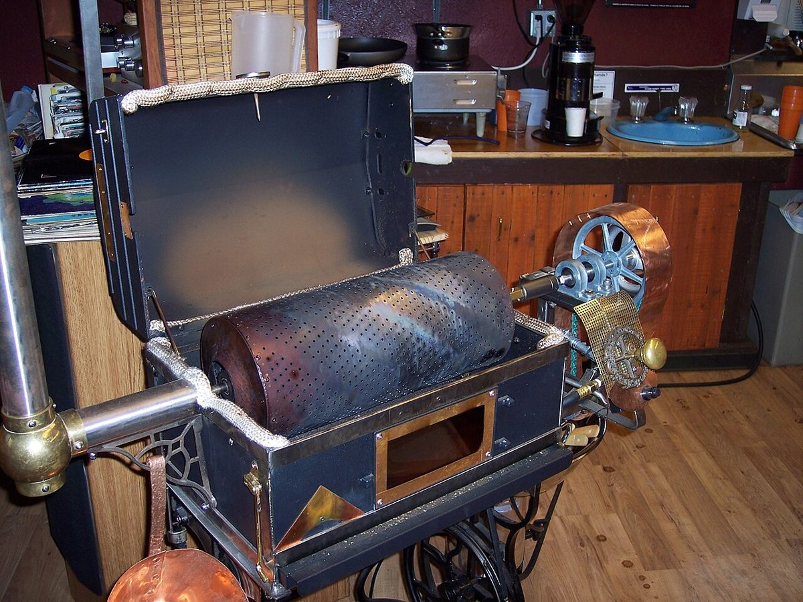
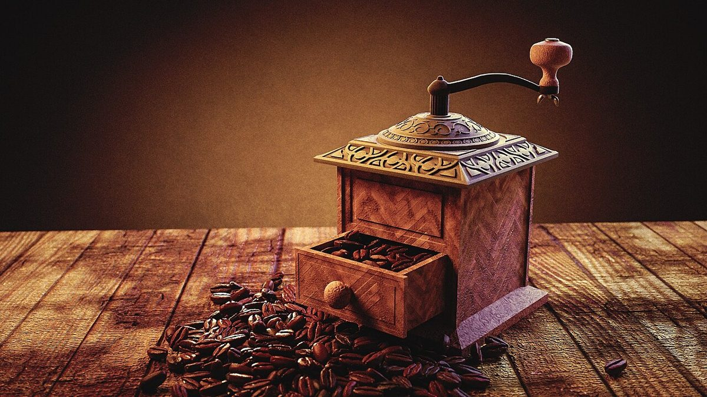

店のこと
店のこと
お店について確認できているのは、所在地とInstagramのアカウントだけです。
このページの「想像してみる」部分は、制作側が想像して書いたものです。お店の実際の様子・考え・メニューとは関係がありません。
確認できていること
- 店名は「福場焙煎所」、業種はカフェ(焙煎)
- 所在地は広島県府中市上下町上下965-1
- 電話番号はなし。連絡はInstagramから
- 営業時間・定休日・メニュー・価格・ご予約・駐車場は準備中

想像してみる
「焙煎所」という言葉から
由来は分かりません。制作側は、「焙煎所」という名前から、豆と向き合うお店かもしれない、と想像しました。実際にどんな豆や飲み物があるのか、どんなお店なのかは分かりません(想像であり、実際のお店の姿ではありません)。
